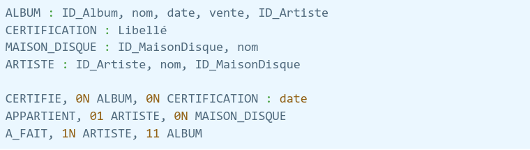
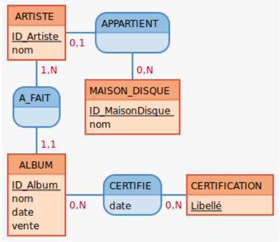
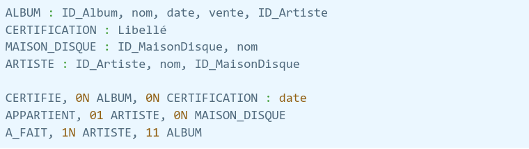

Partie MCD
Ce modèle conceptuel des données a été realisé à l'aide de Mocodo.
L'ensemble de cette partie est détaillé dans notre compte-rendu du projet 1.


Ce modèle conceptuel des données a été realisé à l'aide de Mocodo.
L'ensemble de cette partie est détaillé dans notre compte-rendu du projet 1.
